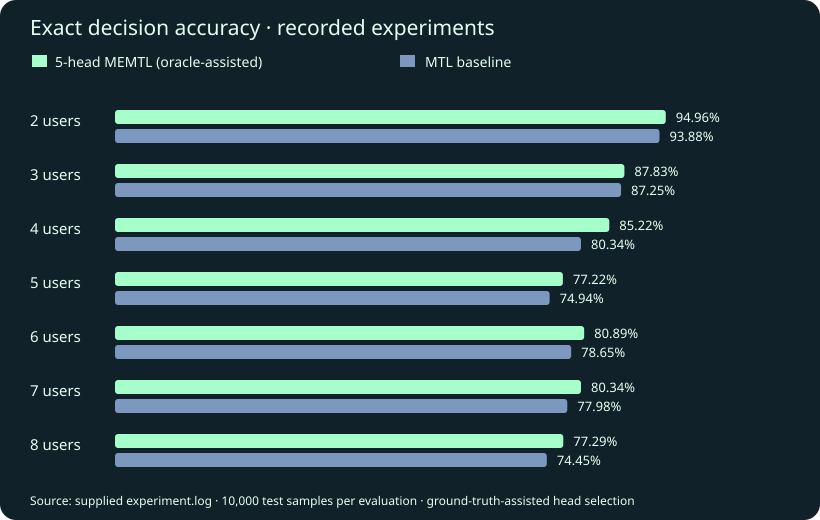

Challenge
Finding the best offloading decision by exhaustive search grows exponentially with the number of users, which is too slow for real-time use.
Final-year thesis · 2026 · Individual research
A neural network that decides which mobile tasks should run on the device and which should be sent to an edge server.

Finding the best offloading decision by exhaustive search grows exponentially with the number of users, which is too slow for real-time use.
Extended a shared-backbone network with five specialised prediction heads, then designed an “enhanced gating” selector that picks a head using only information available at deployment.
Enhanced gating beat majority voting and the original gating at every scale tested, and beat the single-head baseline at 2, 4 and 7 users.
| Users | Baseline | Voting | Original gating | Enhanced gating |
|---|---|---|---|---|
| 2 | 93.88 | 92.57 | 93.34 | 94.18 |
| 4 | 80.34 | 76.97 | 79.10 | 82.44 |
| 6 | 78.65 | 75.95 | 76.44 | 78.21 |
| 8 | 74.45 | 71.47 | 72.22 | 74.06 |
Model design, experiments and head-selection analysis.
Credits: Builds on the MTFNN-CO baseline by its original authors (IEEE TMC 2020; IEEE GLOBECOM 2023).